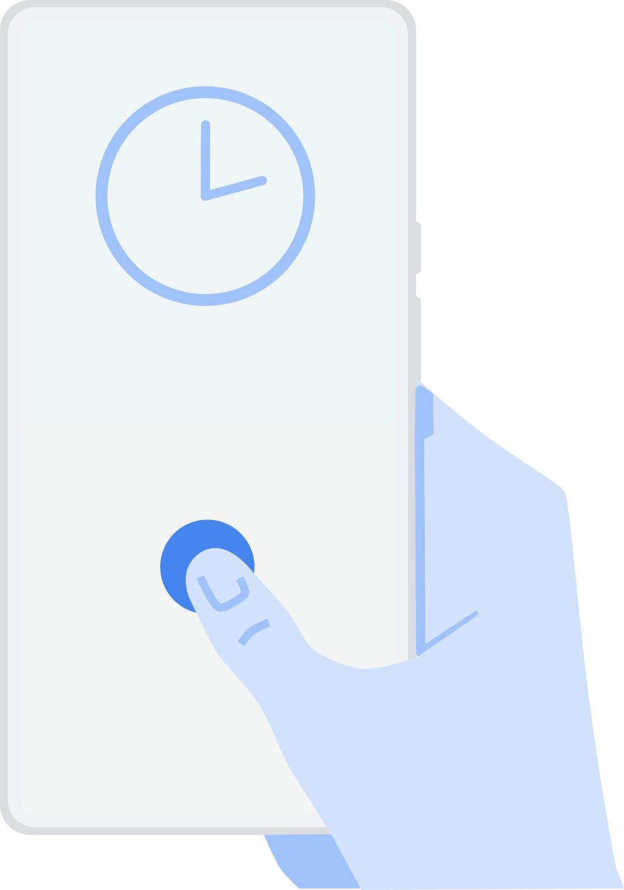
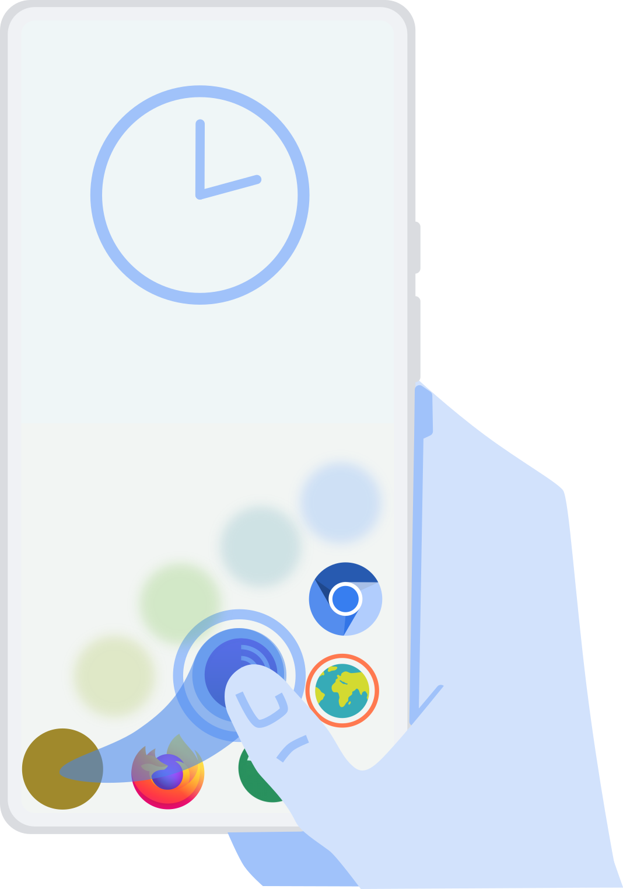
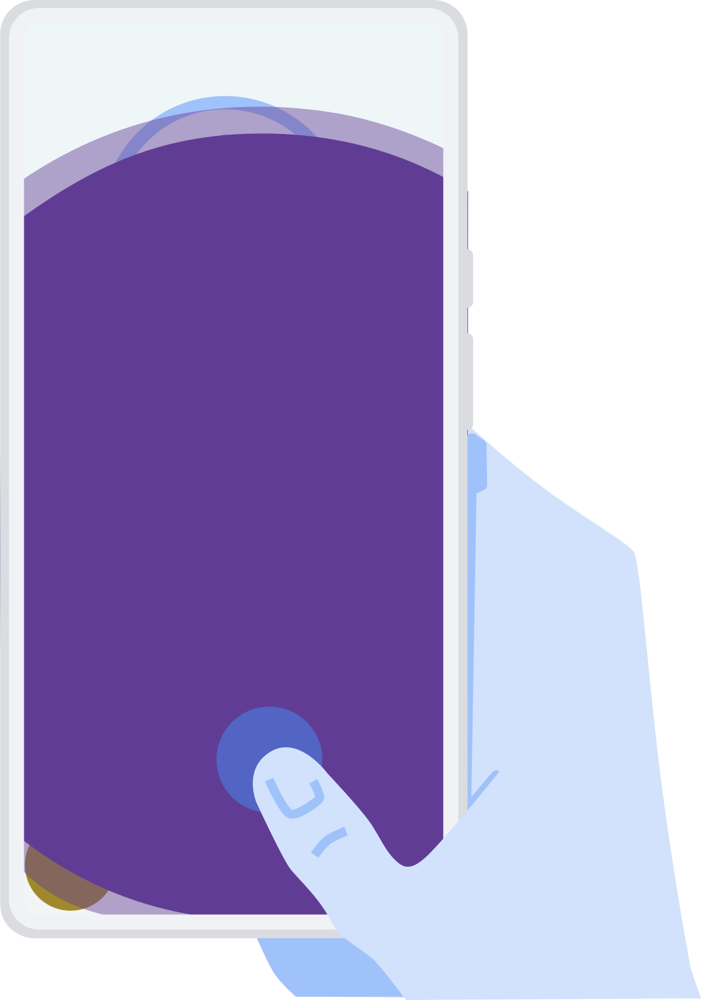
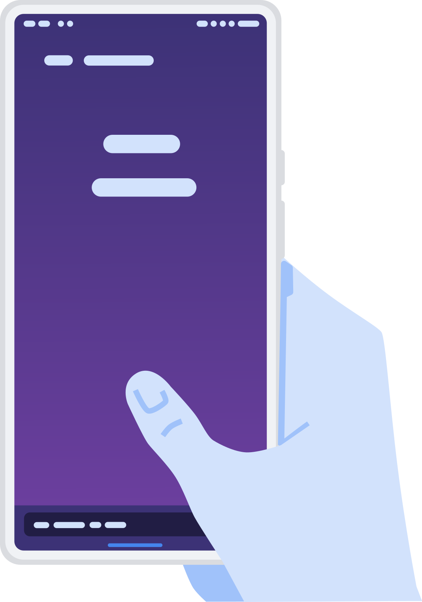
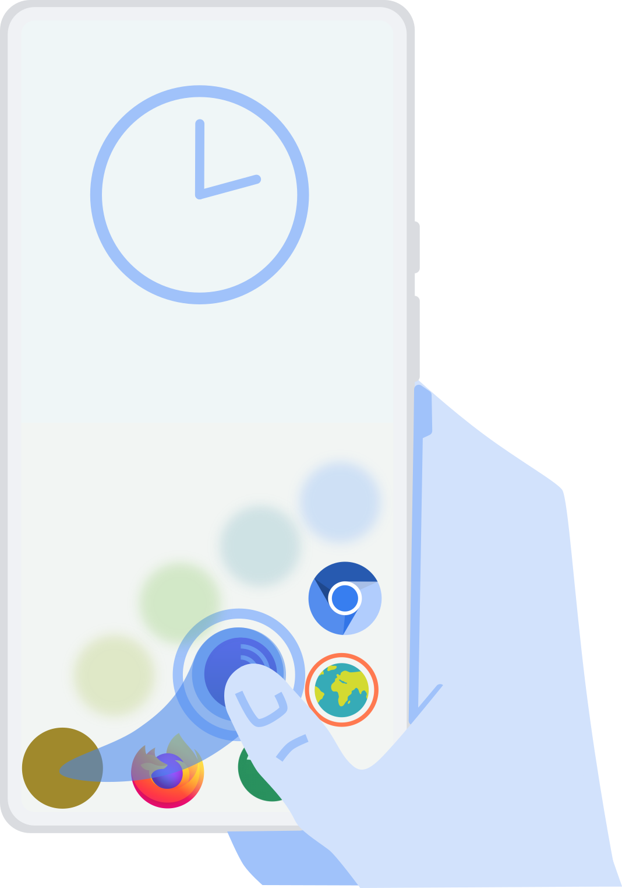
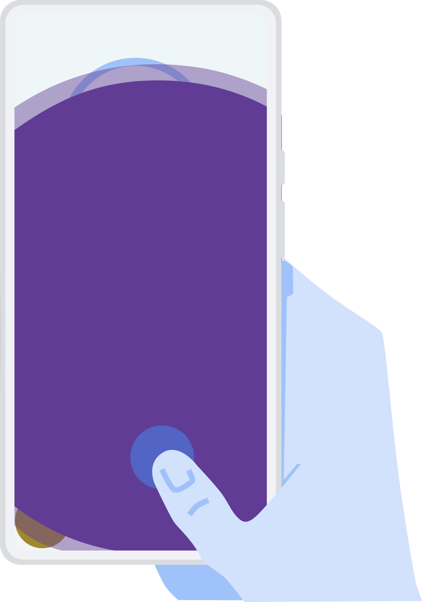
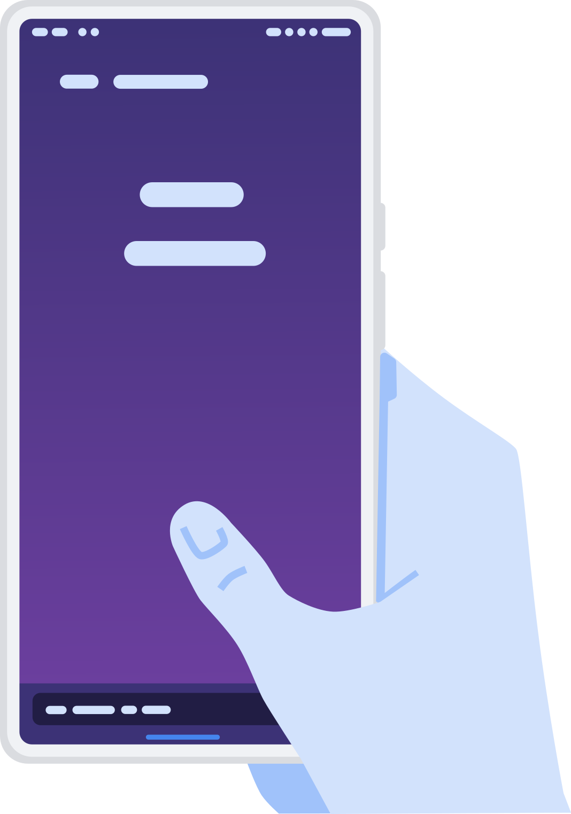
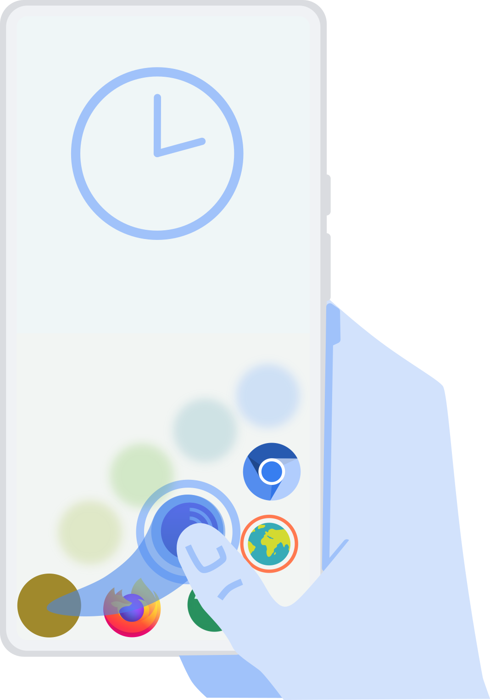
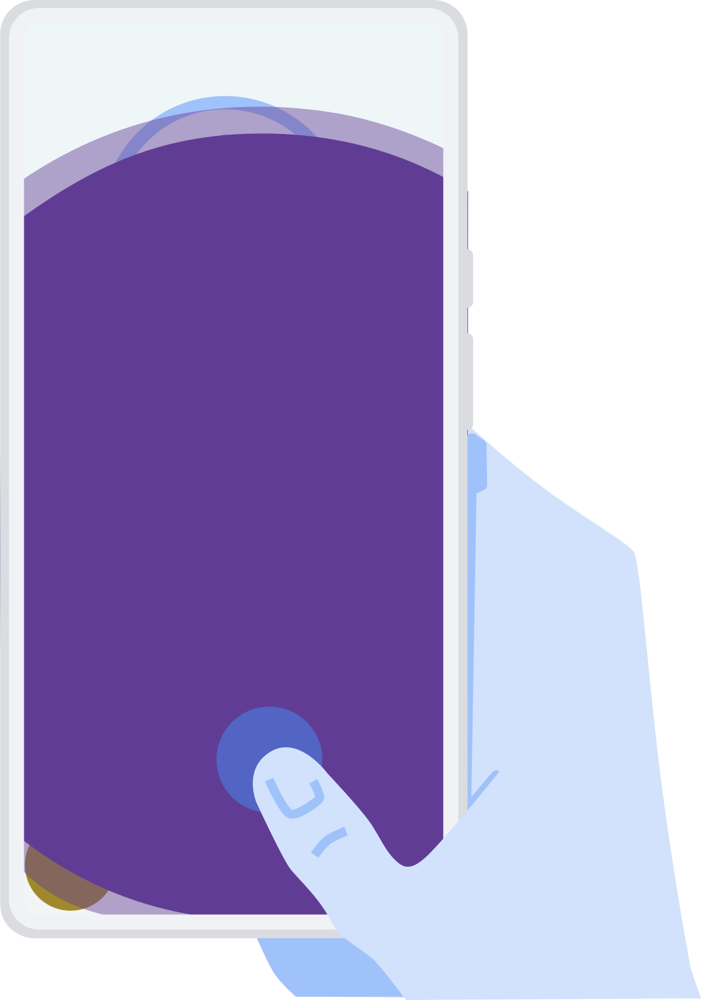
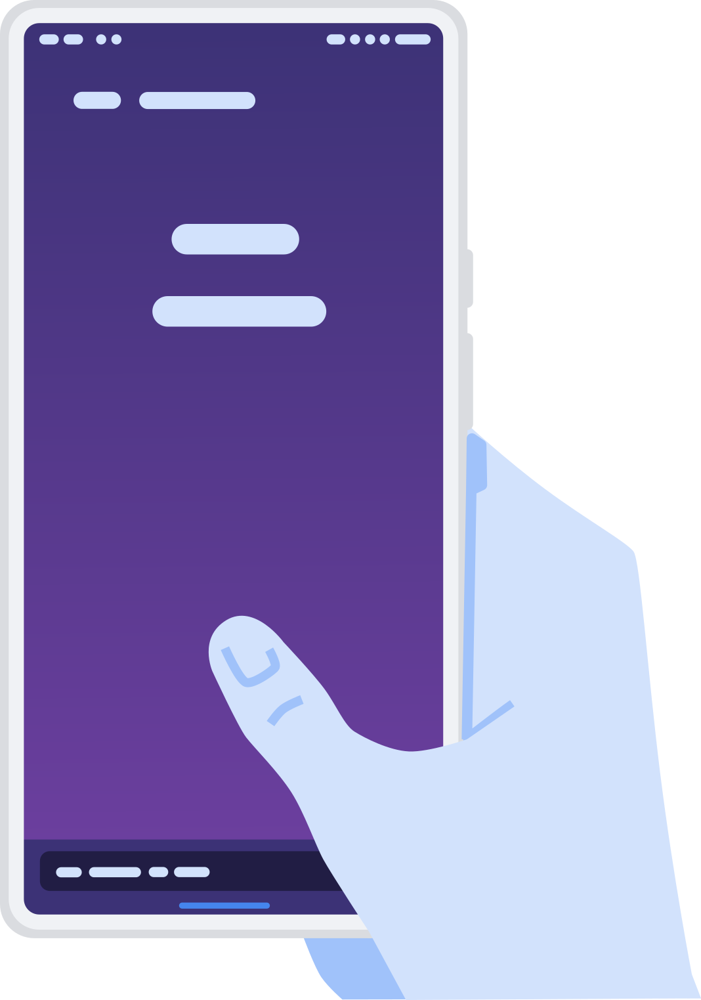

A gesture based, FOSS Android launcher.
A try to create different launch experience
If it'll work out is yet to be seen
Visite the Github page to follow the project
The Concept:

 








Project Goals:
- Make it easy and fast to lauch apps only with your thumb
- Keep a nice and clean homescreen
- Easy opening-access to as many apps as you like
- No chaos as in an appdrawer
- No slow, inconvenient search
Implementation Goals:
- App works as launcher(MAIN, HOME, DEFAULT in AndroidManifest.xml)
- Add settings activity
- App opening capabilities
- Detect all apps
- Get app icons
- Gesture detection
- Add custom gestures, by drawing them on the sceen or pulling and bending vectors with various tolerances
- Add gesture presets like apps sorted by color, beginning letter, etc
- Widget support
- Clean UI, customizable
- Add translations
- Add multiple pages for more widget space
- Navigation and status bar cosmetics